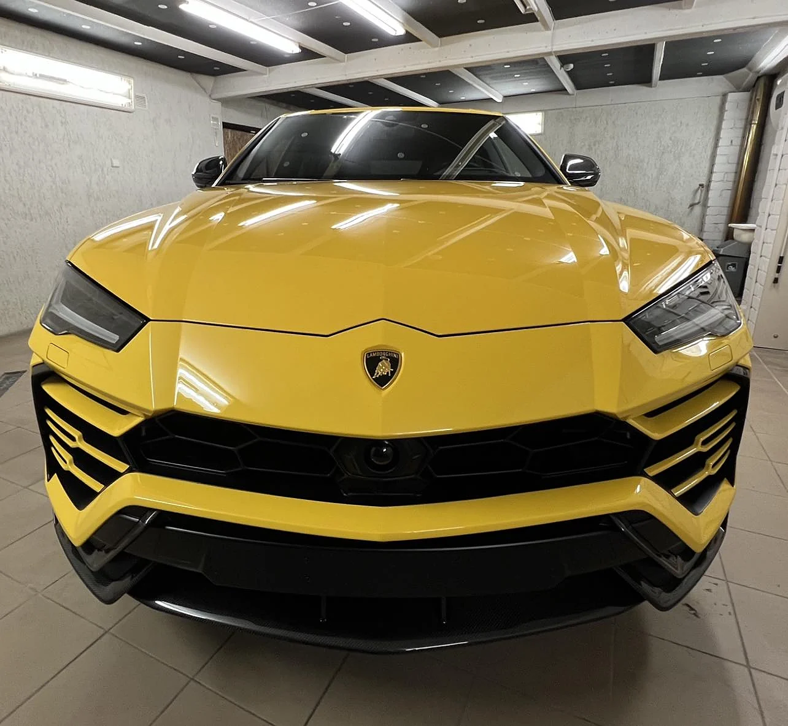
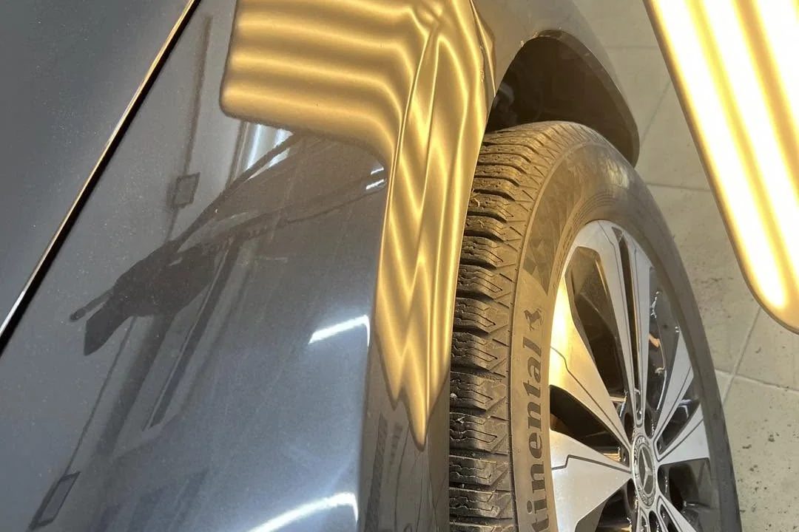
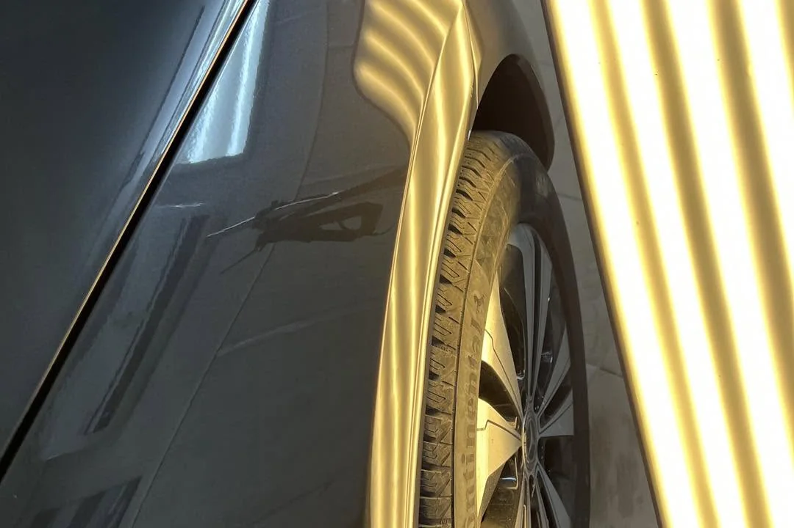
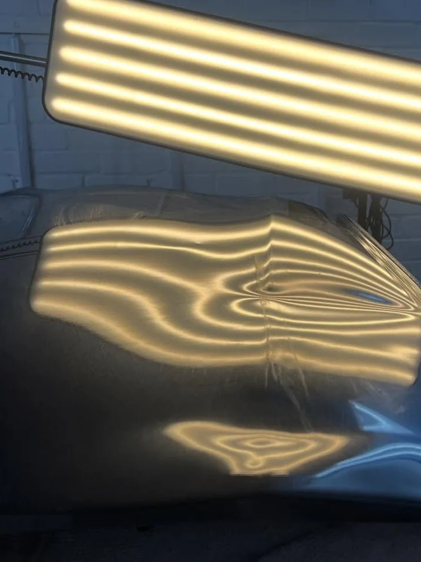
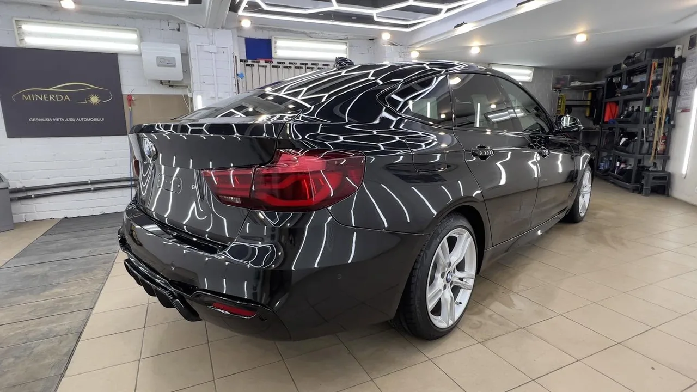

Kaunas · V. Krėvės pr. 129A
Įlenkimas dingsta.
Gamyklinis lakas lieka.
Meninis lyginimas be dažymo, kėbulo poliravimas ir Ceramic Pro nano danga. Kauno studija, kurioje kėbulas taisomas neliečiant originalių dažų.
Alfa Romeo · variklio dangtis po PDR
Prieš ir po
Šviesos linija nemeluoja.
Įlenkimą matuojame ne pirštu, o atspindžiu. Ant sveikos plokštumos šviesos tinklas eina tiesiai — ties pažeidimu jis lūžta ir išsilieja. Tas pats atspindys pasako, kada darbas baigtas.


Darbai palyginimui
Kodėl be dažymo
| Kriterijus | Meninis lyginimas | Dažymas |
|---|---|---|
| Gamyklinis lakas | išsaugomas | nušlifuojamas |
| Glaistas | nenaudojamas | naudojamas |
| Dažų storio matuoklis | rodo originalą | rodo perdažymą |
| Spalvos atitikimas | klausimo nėra | derinamas |
| Automobilio istorija | švari | su perdažymu |
Ne kiekvieną pažeidimą galima ištaisyti PDR metodu — lakas turi būti sveikas. Ar konkrečiu atveju įmanoma, pasakome pagal nuotrauką arba apžiūrėję vietoje.
Ką darome
Trys darbai, viena eilė.
Pirma atkuriama kėbulo forma, tada paviršius, ir tik tada uždedama apsauga. Kita tvarka danga užkonservuoja klaidą.
-
01

Meninis lyginimas
Įlenkimai išspaudžiami iš vidinės pusės arba traukiami iš išorės, kai prieigos į vidų nėra. Durų įlenkimai, sparnai, statramsčiai, krušos padariniai.
-
02

Kėbulo poliravimas
Sūkuriai, plovyklos žymės ir smulkūs įbrėžimai išimami pakopomis, kol atspindys tampa gilus ir vientisas. Tai ir yra paruošimas dangai.
-
03

Apsauginė danga
Keraminė arba grafeno nano danga dengiama ant jau ištaisyto paviršiaus — dirbama su Ceramic Pro ir Artdeshine sistemomis. Kėbulas lieka lengviau plaunamas, blizgesys išsilaiko ilgiau nei po vaško.
Kaip tai atrodo
Lenta juda — paviršius kalba.
Šviesos lenta vedžiojama išilgai plokštumos. Kol linija slenka tolygiai, metalas sveikas; kur ji stabteli ar susilaužo — ten įlenkimas. Toks pat patikrinimas atliekamas ir baigus darbą.
- Taip pat atliekame
- Krušos pažeidimų šalinimas · žibintų poliravimas · salono poliravimas · gilioji dekontaminacija (dervos, metalo dulkės) · įdaužų maskavimas dažais pagal gamyklinį spalvos kodą · ardymo ir surinkimo darbai
- Įkainis
- nuo 40 €/val. nevaziuoja.lt
Galutinė suma priklauso nuo pažeidimų kiekio ir kėbulo būklės — įvertiname pagal nuotraukas arba vietoje.

Studija
Vienas meistras, vienas boksas.
Šešiakampis LED tinklas lubose ir mobilios šviesos lentos. Toks apšvietimas nėra dekoracija — be jo įlenkimo ribų tiesiog nematyti. Kėbulą tvarko pats Mindaugas, tose pačiose srityse dirbantis 11 metų.
- Patirtis
- 11 metų nevaziuoja.lt
- Įvertinimas
- 5,0 iš 2 patvirtintų atsiliepimų nevaziuoja.lt
- Rekomendacijos
- 100 % iš 18 Facebook
- Kalbos
- Lietuvių, anglų, rusų, lenkų
- Veiklos forma
- MINERDA, M. Bakanovo IDV
„Nupoliravo nubrozdintas vietas gražiai, kruopščiai ištiesino mažus įlenkimus ant kėbulo.“
Kipras · Seat Ibiza · patvirtintas atsiliepimas, nevaziuoja.lt
Darbai
Kaip atrodo skaitomas kėbulas.
Nuotraukos iš studijos: šviesos lentos ant pažeistų plokštumų ir baigti automobiliai po poliravimo bei dangos.
Užklausa
Atsiųskite įlenkimo nuotrauką.
Nufotografuokite pažeidimą iš kampo, kad matytųsi šviesos atspindys — taip iš karto matome gylį. Atsakome telefonu arba el. paštu.
- Telefonas+370 633 33969
- MessengerRašyti žinutę
- Instagram@_minerda_
- AdresasV. Krėvės pr. 129A, Kaunas
- Darbo laikasI–V 09:00–17:00 · VI–VII nedirba
- RegistracijaLaisvi laikai internetu